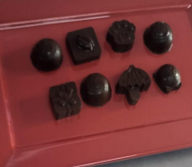

← Volver al módulo 3

Bombones Rellenos de Menta
Deliciosos bombones de chocolate semi amargo rellenos de crema de chocolate blanco con menta, ideales para refrigeración individual.
Ingredientes
- 250 g de chocolate semi amargo
Relleno
- 50 g de chocolate blanco
- 25 ml de crema de leche
- ½ cucharilla de esencia de menta sin color
- ¼ cucharilla de licor de menta
- Colorante verde menta
Preparación
Realizar el mise en place.
-
Preparar el relleno: calentar la crema de leche hasta el primer hervor, agregar el chocolate blanco picado y el licor de menta. Colocar en manga pastelera.
-
Derretir el chocolate semi amargo a baño maría y dejar enfriar a temperatura tibia.
-
Llenar los moldes con el chocolate, girar para cubrir la superficie y escurrir el exceso. Llevar a refrigeración.
-
Agregar el relleno y cubrir con chocolate. Dar pequeños golpes al molde y refrigerar nuevamente.
-
Desmoldar con cuidado y emplatar.